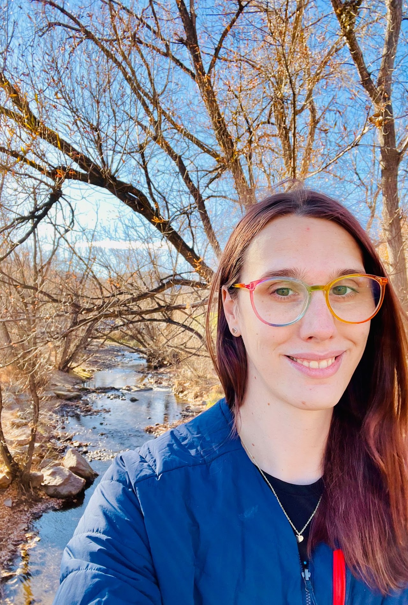

University at Buffalo
Charlie Anne Carlson
Assistant Professor · she/her
I am an Assistant Professor in the Department of Computer Science and Engineering at the University at Buffalo. I work in theoretical computer science and discrete mathematics.
Previously, I was a postdoctoral researcher at SLMath and at UC Santa Barbara, where I worked with Eric Vigoda. I received my Ph.D. from the University of Colorado Boulder in 2023, advised by Alexandra Kolla, and my M.S. from the University of Illinois Urbana-Champaign.

Buffalo, New York
Questions, methods, and ideas
Research
My research centers on approximate counting, spectral graph theory, and combinatorial optimization. I am also interested in Markov chains, randomized and approximation algorithms, extremal graph theory, smoothed analysis, and statistical physics.
If you frame a problem as a graph coloring challenge, I’m almost guaranteed to be captivated.
Preprints
Publications
-
Hardness of Approximation for Shortest Path with Vector Costs
-
Flip Dynamics for Sampling Colorings: Improving (11/6 − ε) Using A Simple Metric
-
Optimal Mixing for Randomly Sampling Edge Colorings on Trees Down to the Max Degree
-
Algorithms for the Ferromagnetic Potts Model on Expanders
-
A Spectral Approach to Approximately Counting Independent Sets in Dense Bipartite Graphs
-
Efficient algorithms for the Potts model on small-set expanders
-
Improved Distributed Algorithms for Random Colorings
-
Approximation Algorithms for Norm Multiway Cut
-
Computational Thresholds for the Fixed-Magnetization Ising Model
-
Improving the Smoothed Complexity of FLIP for Max Cut Problems
-
Lower Bounds for Max-Cut in H-Free Graphs via Semidefinite Programming
-
Spectral Aspects of Symmetric Matrix Signings
-
Optimal Lower Bounds for Sketching Graph Cuts
-
Search-and-Rescue Robots for Integrated Research and Education in Cyber-Physical Systems
University at Buffalo
Teaching
Fall 2026
CSE 331 · Introduction to Algorithms
University at Buffalo
Fall 2025
CSE 331 · Introduction to Algorithms
University at Buffalo
Sharing ideas
Talks &
workshops
Selected talks
September 1, 2025
Sampling Colorings with Markov Chains
ADYN Seminar · Algorithms, Dynamics, and Information Flow in Networks
March 3, 2025
Sampling Colorings with Markov Chains
University of Minnesota · CS&E Colloquium
January 24, 2025
Sampling Colorings with Flip Dynamics
SLMath · Connections Workshop: Probability and Statistics of Discrete Structures
Watch the talkJanuary 10, 2025
Flip Dynamics for Sampling Colorings: Improving (11/6 − ε) Using A Simple Metric
Joint Mathematics Meetings · Seattle, Washington
November 11, 2024
Sampling Colorings with Markov Chains
University of Illinois Urbana-Champaign · Theory Seminar
October 8, 2024
Lower bounds for Max-Cut in H-free graphs via semidefinite programming
LucaFest@Simons · Simons Institute, Berkeley
Workshops & research visits
June 2–6, 2025
Rocky Mountain Summer Workshop on Algorithms, Probability and Combinatorics
Participant · CSU Mountain Campus, Colorado
Spring 2025
Probability and Statistics of Discrete Structures
Postdoctoral researcher · SLMath, Berkeley
October 8–9, 2024
LucaFest@Simons
Speaker · Simons Institute, Berkeley
August 11–16, 2024
Frontiers of Statistical Mechanics and Theoretical Computer Science
Speaker · BIRS, Banff, Canada. Talk: “Sampling colorings (with Markov Chains).”
Workshop reportNovember 27–December 2, 2022
Counting and Sampling: Algorithms and Complexity
Participant · Schloss Dagstuhl, Germany
August 8–12, 2022
New tools for optimal mixing of Markov chains: Spectral independence and entropy decay
Participant and speaker · UC Santa Barbara. Talk: “Fixed-Magnetization Ising Model” (August 12).
ProgramSpring 2019
Geometry of Polynomials
Visiting graduate student · Simons Institute, Berkeley
Fall 2017
Bridging Continuous and Discrete Optimization
Visiting graduate student · Simons Institute, Berkeley
Academic community
Service
I have served as a reviewer for FOCS, STOC, SODA, ICALP, and ITCS.